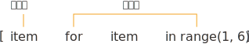
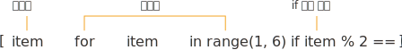

제어문
반복문 (for, while)
시퀀스형 데이터를 순회할 때 사용된다.
String 순회
for char in 'ASDFASDF':
print(char)
A
S
D
F
A
S
D
F
리스트 순회
l = [1, 2, 3, 4, 5, 6, 'list01', 'list02']
for i in l:
print(i)
1
2
3
4
5
6
list01
list02
i 는 순차적으로 리스트 내부에 있는 값을 할당받게 된다.
리스트 내부에 또다른 리스트가 있을 경우 그 값을 순차적으로 출력하려면 for 문을 중첩하여 사용하면 된다.
l = [
[1,2,3],
[4,5,6],
[7,8,9],
]
for i in l:
for e in i:
print(e)
1
2
3
4
5
6
7
8
9
딕셔너리 순회
fruits = {
'apple':'사과',
'banana':'바나나',
'cherry':'체리',
}
for item in fruits:
print(item)
apple
banana
cherry
딕셔너리를 그냥 출력하게 되면 key 값만 나온다. 위의 결과는 아래의 결과와 같다.
for item in fruits.keys():
print(item)
apple
banana
cherry
values 들을 출력하고 싶을 때는 위의 keys() 부분을 values() 로 바꾸어 주면 된다.
for 문으로 key 값과 value 값을 전부 string 값을 출력하려면 아래와 같이 해보자
for item in fruits.items():
print(f'{item[0]}:{item[1]}')
딕셔너리 안의 딕셔너리 안의 리스트 순회
# 해당하는 딕셔너리를 아래의 결과값과 같이 출력해보자.
# 변수 생성
girlgroups = {
'girlsday':{
'korean':'걸스데이',
'members':'민아,혜리,유라,소진'.split(','),
},
'redvelvet':{
'korean':'레드벨벳',
'members':'아이린,슬기,웬디,조이,예리'.split(','),
},
}
# 해당 변수의 값
{'girlsday': {'korean': '걸스데이', 'members': ['민아', '혜리', '유라', '소진']},
'redvelvet': {'korean': '레드벨벳', 'members': ['아이린', '슬기', '웬디', '조이', '예리']}}
# 출력 결과
민아
혜리
유라
소진
아이린
슬기
웬디
조이
예리
# 내 나름대로의 정답
for gir in girlgroups.values():
for i in gir['members']:
print(i)
break, continue
break
result = ['민아', '혜리', '유라', '소진', '아이린', '슬기', '웬디', '조이', '예리',]
for members in result:
print(members)
if members == '소진':
print('찾았다')
break
민아
혜리
유라
소진
찾았다
해당하는 조건에 일치하는 반복문을 중단하고 싶을때 사용한다.
continue
for members in result:
print(1)
print(2)
print(members)
if members == '소진':
continue
print(3)
print(4)
1
2
민아
3
4
1
2
혜리
3
4
1
2
유라
3
4
1
2
소진
1
2
아이린
3
4
1
2
슬기
3
4
1
2
웬디
3
4
1
2
조이
3
4
1
2
예리
3
4
continue 가 사용되었을때 다음 순회로 넘어간다.
여러 시퀀스를 동시 순회
# zip 을 사용하지 않고 동시 순회하라
fruits = ['apple', 'banana', 'melon']
colors = ['red', 'yellow', 'green', 'purple']
for index, fruit in enumerate(fruits):
print(f'fruit:{fruit} color:{colors[index]}')
fruit:apple color:red
fruit:banana color:yellow
fruit:melon color:green
enumerate로 순회인자인 fruit 의 index 값을 받아오고 출력할때 colors 리스트의 인덱스값을 같이 출력하도록 작성했다.
숫자 시퀀스 생성(range)
range() 함수는 특정 범위의 숫자 스트림 데이터를 반환한다.
range(start, stop, step)
for i in range(2)
pritn(i)
1
2
해당하는 숫자를 입력하면 그만큼 순회한다.
while
for 문과 유사하나, while 뒤의 조건이 참일 경우에 계속해서 반복한다.
while 조건:
조건이 참일경우 실행
조건이 거짓이 될 경우까지 계속해서 반복
count = 0
while count < 10:
print(count)
count += 1
0
1
2
3
4
5
6
7
8
9
count 값이 10이 되면 10 보다 값이 작지 않아서 순회를 멈춘다.
컴프리헨션(Comprehension)

가독성에 문제가 없는 수준의 반복문(제어문) 일 경우 무조건 사용해주는것이 성능에 좋은 영향을 미친다.
numbers = []
for item in range(1, 6):
numbers.append(item)
[1, 2, 3, 4, 5]
위의 반복문을 리스트 컴프리헨션 식으로 변환하면
[item for item in range(1, 6)]
[1, 2, 3, 4, 5]
와 같이 출력된다. 첫번째 같은 이름(item) 이 두개가 쓰였는데 첫번째에 있는 이름(item) 은 뒤의 반복되는 이름(item) 의 출력값(표현식) 이 된다.
if 문을 같이 활용하려면 어떻게?

반복된 리스트중 짝수만 출력하고싶다. 이럴때에 리스트컴프리헨션으로 어떻게 사용하면 될까?
[item for item in range(1, 6) if item % 2 == 0]
for 문에서 반복된 이름(item)을 if 문에서 제약조건을 걸어준다. 최종적으로 출력되는 표현식은 기존과 같이 첫번째 이름(item) 이다.
즉 결과가 앞에오고 과정이 뒤에 있다고 생각하자
리스트컴프리헨션을 2중첩 이상으로 사용하지 말자, 성능상으로 이득이 있는 것은 사실이지만 python 정의상 가독성을 매우 해친다.
실습
for문을 2개 중첩하여 (0,0), (0,1), (0,2), (0,3), (1,0), (1,1)……(6,3)까지 출력되는 반복문을 구현한다.
for i in range(6+1):
for l in range(4):
print(f'({i},{l})')
(0,0)
(0,1)
(0,2)
(0,3)
(1,0)
(1,1)
(1,2)
(1,3)
(2,0)
(2,1)
(2,2)
(2,3)
(3,0)
(3,1)
(3,2)
(3,3)
(4,0)
(4,1)
(4,2)
(4,3)
(5,0)
(5,1)
(5,2)
(5,3)
(6,0)
(6,1)
(6,2)
(6,3)
리스트컴프리헨션을 중첩하여 위 결과를 갖는 리스트를 생성한다.
[(i,l) for i in range(6+1) for l in range(3+1)]
[(0, 0),
(0, 1),
(0, 2),
(0, 3),
(1, 0),
(1, 1),
(1, 2),
(1, 3),
(2, 0),
(2, 1),
(2, 2),
(2, 3),
(3, 0),
(3, 1),
(3, 2),
(3, 3),
(4, 0),
(4, 1),
(4, 2),
(4, 3),
(5, 0),
(5, 1),
(5, 2),
(5, 3),
(6, 0),
(6, 1),
(6, 2),
(6, 3)]
1, 2번의 반복문에서 1번은 튜플의 첫 번째 항목이 짝수일때만 출력하도록, 2번은 첫 번째 항목이 짝수일때만 리스트의 원소로 추가한다.
for i in range(6+1):
for l in range(4):
if i % 2 == 0:
print(f'({i},{l})')
(0,0)
(0,1)
(0,2)
(0,3)
(2,0)
(2,1)
(2,2)
(2,3)
(4,0)
(4,1)
(4,2)
(4,3)
(6,0)
(6,1)
(6,2)
(6,3)
[(i,l) for i in range(6+1) for l in range(3+1) if i % 2 == 0]
[(0, 0),
(0, 1),
(0, 2),
(0, 3),
(2, 0),
(2, 1),
(2, 2),
(2, 3),
(4, 0),
(4, 1),
(4, 2),
(4, 3),
(6, 0),
(6, 1),
(6, 2),
(6, 3)]
1000 에서 2000까지의 숫자 중, 홀수의 합을 구해본다.
sums = 0
for i in range(1000+1, 2000+1):
if i % 2 == 1:
sums += i
print(sums)
750000
리스트컴프리헨션을 사용하여 구구단 결과를 갖는 리스트를 만들고, 해당 리스트를 for 문을 사용해 구구단 형태로 나오도록 출력해본다. 각 단마다 한번더 줄바꿈을 넣어준다.
multiplication_table = [f'{i} * {l} = {i*l}' for i in range(1, 9+1) for l in range(2, 9+1)]
for index, i in enumerate(multiplication_table):
if index % 9 == 0:
print(f'\n{index // 9 +2}단\n')
print(i)
2단
2 * 1 = 2
2 * 2 = 4
2 * 3 = 6
2 * 4 = 8
2 * 5 = 10
2 * 6 = 12
2 * 7 = 14
2 * 8 = 16
2 * 9 = 18
3단
3 * 1 = 3
3 * 2 = 6
3 * 3 = 9
3 * 4 = 12
3 * 5 = 15
3 * 6 = 18
3 * 7 = 21
3 * 8 = 24
3 * 9 = 27
4단
4 * 1 = 4
4 * 2 = 8
4 * 3 = 12
4 * 4 = 16
4 * 5 = 20
4 * 6 = 24
4 * 7 = 28
4 * 8 = 32
4 * 9 = 36
5단
5 * 1 = 5
5 * 2 = 10
5 * 3 = 15
5 * 4 = 20
5 * 5 = 25
5 * 6 = 30
5 * 7 = 35
5 * 8 = 40
5 * 9 = 45
6단
6 * 1 = 6
6 * 2 = 12
6 * 3 = 18
6 * 4 = 24
6 * 5 = 30
6 * 6 = 36
6 * 7 = 42
6 * 8 = 48
6 * 9 = 54
7단
7 * 1 = 7
7 * 2 = 14
7 * 3 = 21
7 * 4 = 28
7 * 5 = 35
7 * 6 = 42
7 * 7 = 49
7 * 8 = 56
7 * 9 = 63
8단
8 * 1 = 8
8 * 2 = 16
8 * 3 = 24
8 * 4 = 32
8 * 5 = 40
8 * 6 = 48
8 * 7 = 56
8 * 8 = 64
8 * 9 = 72
9단
9 * 1 = 9
9 * 2 = 18
9 * 3 = 27
9 * 4 = 36
9 * 5 = 45
9 * 6 = 54
9 * 7 = 63
9 * 8 = 72
9 * 9 = 81
1에서 99까지 정수 중, 7의 배수이거나 9의 배수인 정수인 리스트를 생성한다.
result = []
for i in range(1, 99+1):
if i % 7 == 0 or i % 9 == 0:
result.append(i)
[7,
9,
14,
18,
21,
27,
28,
35,
36,
42,
45,
49,
54,
56,
63,
70,
72,
77,
81,
84,
90,
91,
98,
99,
7,
9,
14,
18,
21,
27,
28,
35,
36,
42,
45,
49,
54,
56,
63,
70,
72,
77,
81,
84,
90,
91,
98,
99]